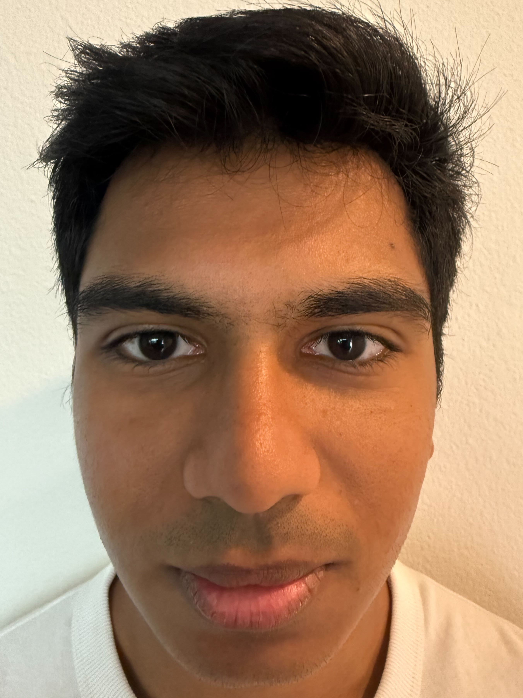

CS 180 Fall 2025
Project 0: Becoming Friends With Your Camera
Part 1: Selfie: The Wrong Way vs. The Right Way
The distortion occurs due to perspective effects. When the camera is very close to the subject, different parts of the face are at significantly different distances from the lens. When shooting from farther away, the relative distance differences between facial features become negligible, resulting in more natural proportions.
|
Close, 0.5x Zoom
|

1x Zoom
|
Far, 2x Zoom
|
Part 2: Architectural Perspective Compression
The distant shot makes the scene look flattened and compressed - the tall building in the background appears closer to the foreground building. As we move closer, the distance between the buildings is more significant, making the background building appear farther away and smaller relative to the foreground.
|
Distant Shot
|
Medium Shot
|
Close-up Shot
|
Part 3: The Dolly Zoom
As the camera moves back and zooms in, the background elements appear to grow larger and move closer to the subject. This happens because moving farther away while zooming in compresses the perspective, making the background appear larger relative to the subject that stays the same size.
 Dolly Zoom Effect
Dolly Zoom Effect
|